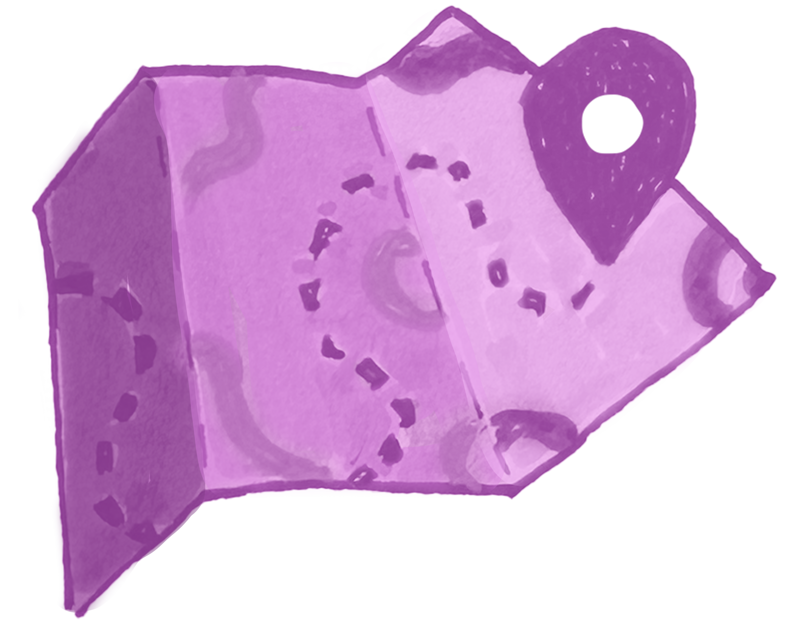
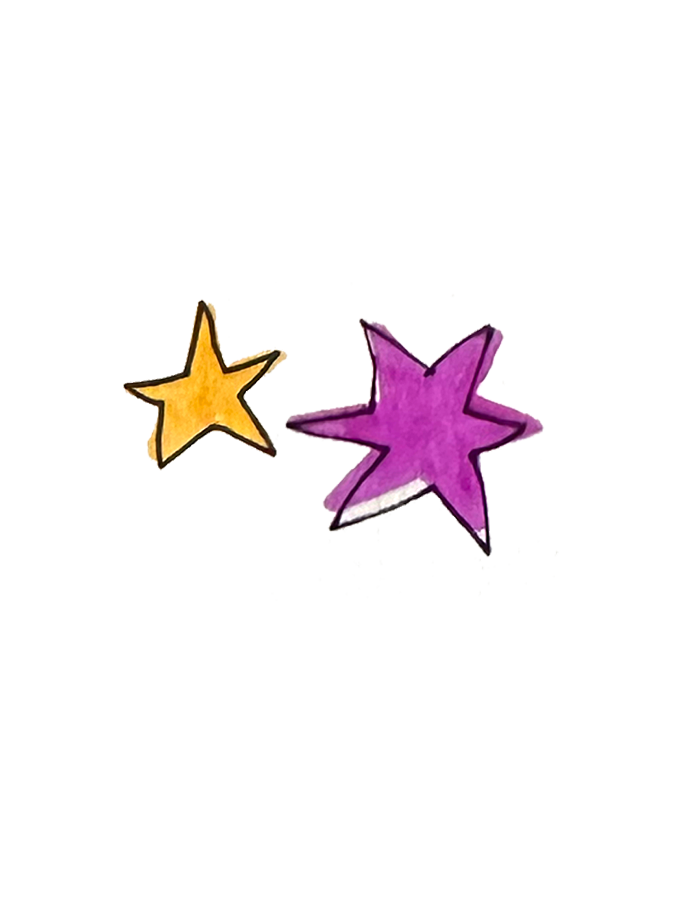
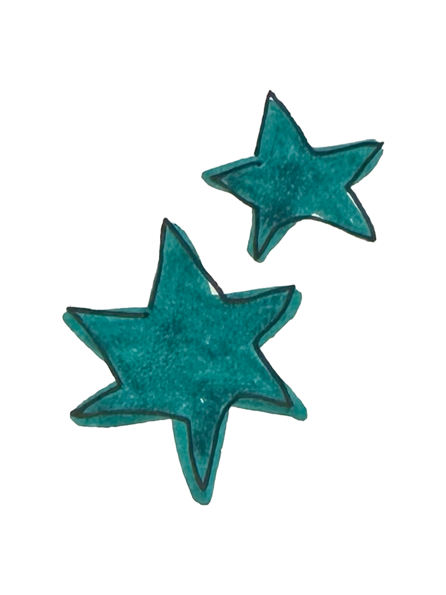
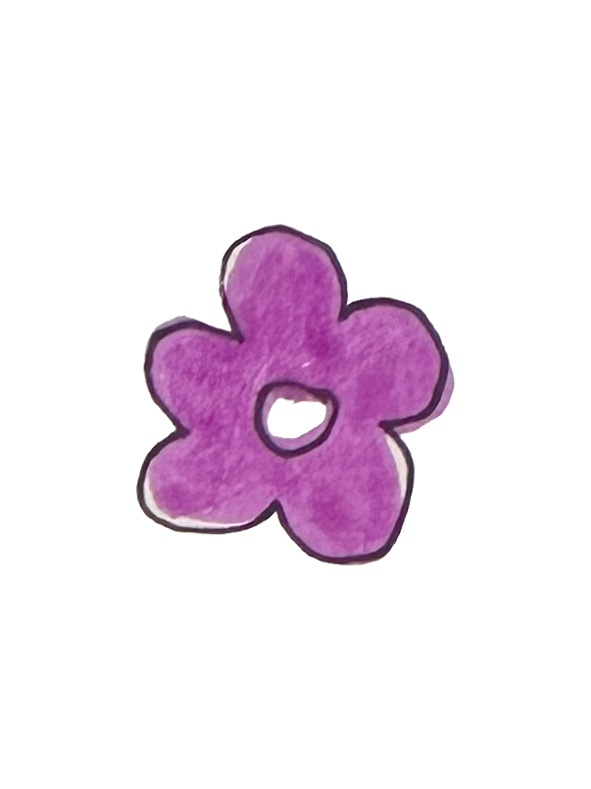
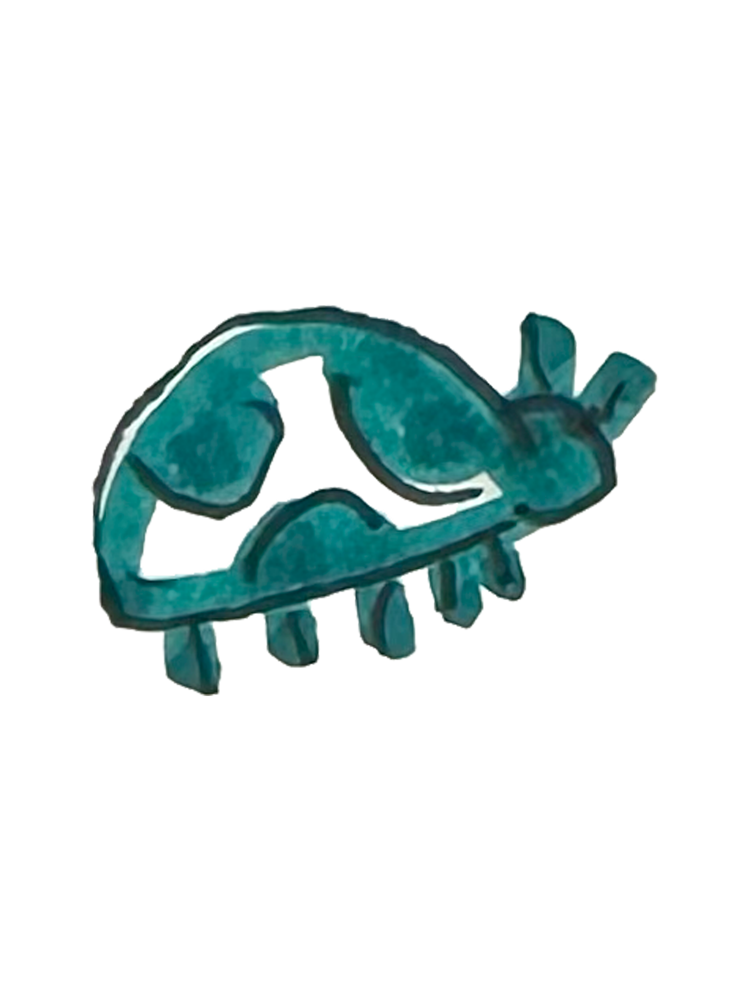
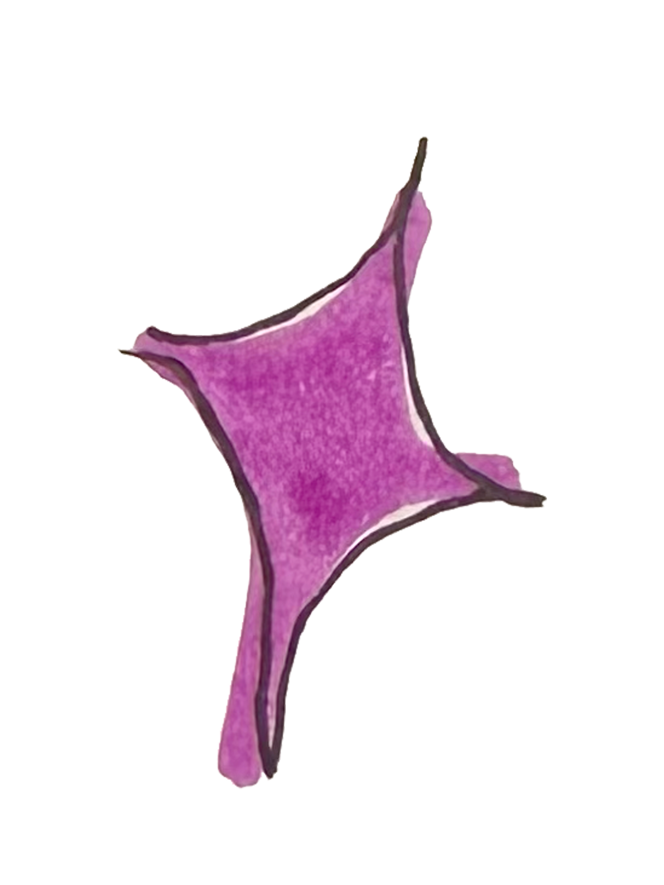
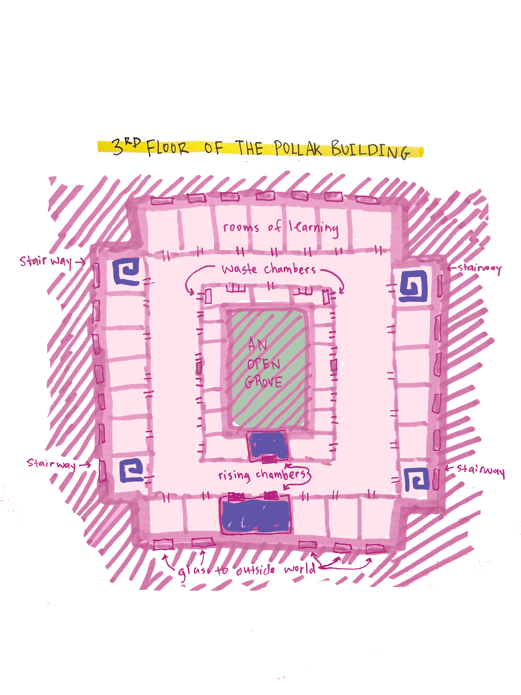
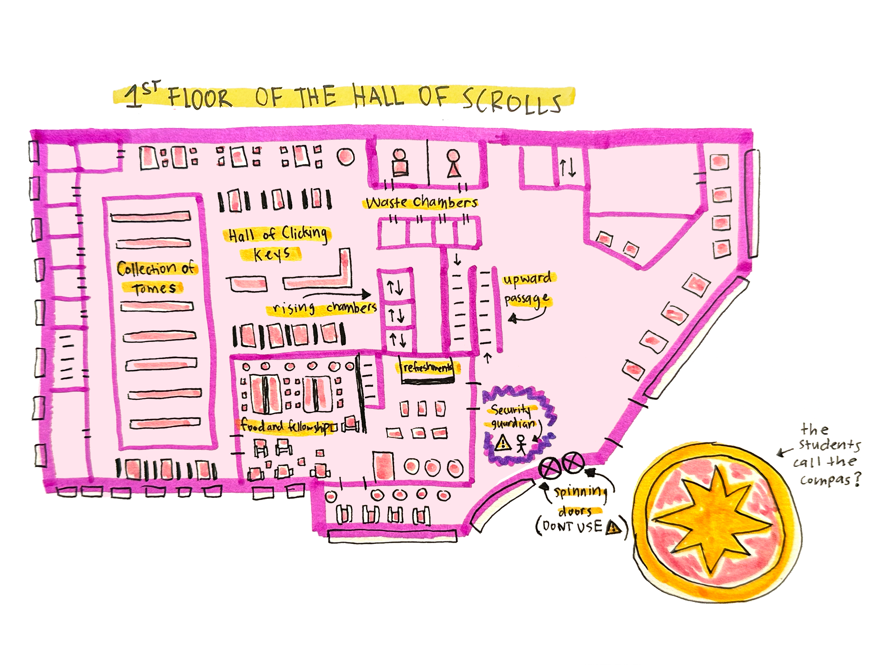

home
My Map Collection📍
A map of the human's VCU grounds, where buildings are crafted for various activities. I bid thee study this chart well, that thou mayst know where to seek refuge and conceal thyself when the need arises.
A map of the third floor of the Pollak Building. This is mine favored place upon the campus, and this floor, where graphic design doth flourish. Mark well the exits, for they shall guide thee when thou must depart.
I have wrought a map of the library at VCU, a place where students gather to study and labor upon their assignments. Many windows doth adorn the walls, yet all are sealed with such care that I, in mine quiet contemplation, am still uncovering the best point of entry. I do believe the front door to be the most favorable, though not the spinning portals, for those are nigh impossible to pass through unnoticed.
This is the first floor of the food hall and market, a lively realm of feasting. Here doth lie an array of dining houses and an abundance of tables for gathering and eating. Merchants tend their stalls, offering meats, breads, and vegetables to all who pay. Yet beware, for this floor swells with busyness at the height of the day. Tread with care!